정보통신기사(구) (2008-05-11 기출문제)
1과목: 디지털 전자회로
1. 다음 회로에서 그림과 같은 입력에 대해 출력파형은? (단, 다이오드 D1, D2와 연산증폭기는 이상적이다.)
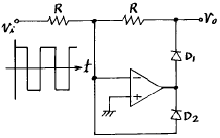
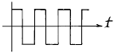
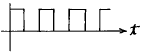
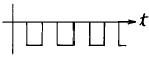
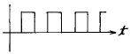
(정답률: 53%)

2. A급 증폭기에서 입력신호전압이 정현파일 때 출력전력은?
- 입력 신호전압의 크기에 비례한다.
- 입력 신호전압의 제곱에 비례한다.
- 입력 신호전압의 주파수에 비례한다.
- 입력 신호전압의 주파수에 반비례한다.
(정답률: 74%)
3. 개루프 전압이득이 40[dB]인 저주파 증폭기에서 비직선 일그러짐이 10[%]일 때, 이것을 1[%]로 개선하기 위한 전압궤환율 β는?
- 1/40
- 9/100
- 9/1000
- 11/1000
(정답률: 60%)
4. 그림의 연산증폭기의 전달함수
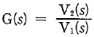
은?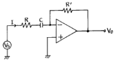
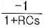
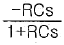
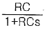
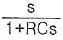
(정답률: 45%)
5. 그림에 표시한 회로에서 출력정압 VO는 입력전압 VS와 어떤 관계가 있는가?
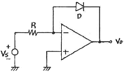
- VO는 VS의 R배로 증폭된다.
- VO는 VS의 지수로 나타난다.
- VO는 VS의 역수에 비례한다.
- VO는 VS의 자연대수 (log2)에 비례한다.
(정답률: 71%)
6. 다음 카르노(Karnaugh)도의 논리식은?
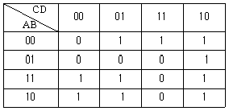
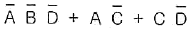
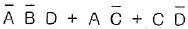
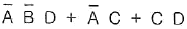
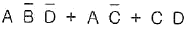
(정답률: 86%)
7. 다음 논리회로의 논리식이 옳은 것은? (단, 정논리이다.)
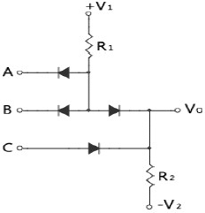
- Vo = (A + B)C
- Vo = AB + C
- Vo = A + B + C
- Vo = A + BC
(정답률: 74%)
8. 다음 회로의 발진기는?
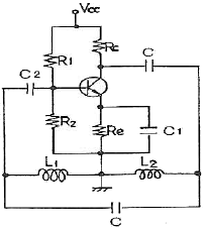
- Colpitts
- Hartley
- Wien-Bridge
- Crystal
(정답률: 66%)
9. 다음과 같은 회로의 출력 임피던스는 약 얼마인가? (단, 드레인 저항 rd=10[kΩ], μ=50, Rd=Rs=1[kΩ])
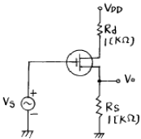
- 370 [Ω]
- 216 [Ω]
- 75 [Ω]
- 50 [Ω]
(정답률: 67%)
10. 다음 NAND 게이트로 구성된 논리회로의 입력(A, B)에 대한 출력(Y)은?
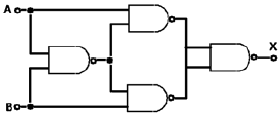
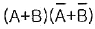
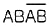
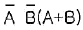
- AB
(정답률: 58%)
11. 다음 병렬공진회로에서 공진 주파수 fo의 관계식으로 옳은 것은?
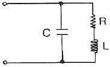
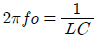
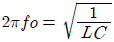
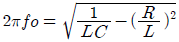
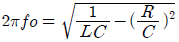
(정답률: 65%)
12. 저주파 증폭기의 출력에서 기본파 전압 성분이 50[V], 제 2 고조파 전압 성분이 4[V], 제3고조파 전압 성분이 3[V]일 경우 이 증폭기의 왜율은?
- 50[%]
- 10[%]
- 15[%]
- 20[%]
(정답률: 64%)
13. 다음 중 그림의 바이어스 회로에서 안정도(Stability)를 좋게 하려면 어떻게 하여야 하는가?
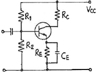
- RE를 적게하고 R1을 크게한다.
- RC를 크게 하고 VCC를 높게 한다.
- R1과 R2를 크게 하고 RE를 적게 한다.
- RE를 크게 하고 R1과 R2를 적게 한다.
(정답률: 61%)
14. 다음 그림의 회로는?
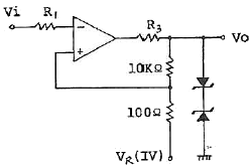
- 클램프 회로
- 차동증폭 회로
- 슬라이서 회로
- 시미트트리거 회로
(정답률: 53%)
15. 그림과 같은 AM 변조회로는 어떤 변조방식인가?
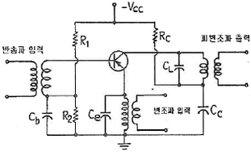
- 에미터 변조
- 베이스 변조
- 콜렉터 변조
- 에미터-베이스 변조
(정답률: 73%)
16. 2n개의 입력신호 중 1개를 선택하여 출력하는 기능을 갖는 것은?
- Encoder
- Decoder
- Mux
- Latch
(정답률: 58%)
17. 다음 중 환형 계수기(ring counter)와 같은 것은?
- BCD 계수기
- 가역 계수기
- 시프트 레지스터
- 순환 시프트 레지스터
(정답률: 87%)
18. 부퀘환회로 사용시 얻을 수 있는 내용이 아닌 것은?
- 입ㆍ출력 임피던스를 변화 시킬 수 있다.
- 증폭기의 전달이득(Avf)이 h정수의 변화에 민감하다.
- 주파수 특성이 좋아진다.
- 동작에 있어서 선형성이 좋아진다.
(정답률: 65%)
19. 다음 중 두 입력이 같을 때에만 1을 출력하는 게이트는?
- AND 게이트
- OR 게이트
- Exclusive OR 게이트
- Exclusive NOR 게이트
(정답률: 55%)
20. 다음 중 평형변조 회로를 사용하는 주 목적은?
- 변조도를 크게 하기 위해서
- 직선성을 개선하고 변조 일그러짐을 없애기 위해서
- SSB파를 얻기 위해서
- 변조 전력을 줄이기 위해서
(정답률: 72%)
2과목: 정보통신 시스템
21. 다음 중 심볼간의 간섭 정도를 나타내는 것은?
- 아이패턴(Eye pattern)
- 변조도(m)
- 신호대잡음비(SNR)
- 교차편차식별도(XPD)
(정답률: 64%)
22. X. 25 프로토콜의 링크레벨에서 적용되는 프로토콜은?
- LAP-B
- ADCCP
- BSC
- SDLC
(정답률: 65%)
23. 다음에 열거한 액세스 제어방식과 이에 관련된 내용이 잘못 연결된 것은?
- Token Bus - MAP
- Polling - PBX
- Token Ring - FDDI
- CSMA/CD - Ethernet
(정답률: 56%)
24. 디지털 전송로에 이용되는 중계기의 3R 기능에 해당되지 않는 것은?
- Retiming
- Regenerating
- Reshaping
- Reset
(정답률: 79%)
25. 인트라넷(intranet)을 운용할 때 외부의 허가를 받지 않은 사람이 무단으로 네트워크 내부로 들어오는 것을 방지하는 것은?
- 방화벽(Firewall)
- 리피터(Repeater)
- 패드(pad)
- 브라우저(Browser)
(정답률: 78%)
26. 어느 도시와 그 주변도시에 80개의 전화국이 있을 경우 이들 전화국을 모두 망형으로 연결하려면 몇 회선이 필요한가?
- 936
- 1414
- 2016
- 3160
(정답률: 71%)
27. 다음 중 100[Mbps]로 동작하는 토큰링 방식을 사용하는 광 LAN은?
- 고속 이더넷
- FDDI
- 스위칭 LAN
- 기가비트 이더넷
(정답률: 63%)
28. 통신 시스템에서 평균고장간격(MTBF)과 평균수리시간(MTTR)이 주어질 경우 가동률[%]의 표시는?
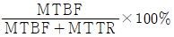
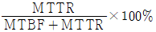
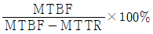
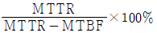
(정답률: 78%)
29. 다음 중 축적 교환방식에 해당되지 않는 것은?
- 가상회선 패킷 교환 방식
- 회선교환 방식
- 메시지 교환 방식
- 데이터그램 패킷교환 방식
(정답률: 47%)
30. HDLC의 프레임 필드 중 오류제어와 관련되는 필드는?
- 플래그
- FCS
- 제어부
- 정보부
(정답률: 61%)
31. 프로토콜의 기본 요소에서 각종 제어절차에 관한 제어 정보 등을 규정한 것은?
- Syntax
- Semantics
- Timing
- Format
(정답률: 40%)
32. WAN(Wide Area Network)의 종류에 해당하지 않는 것은?
- CSMA/CD 통신망
- 공중전화망(PSTN)
- 공중데이터망(PSDN)
- 광대역종합정보통신망(B-ISDN)
(정답률: 59%)
33. 다음 중 ATM 프로토콜 구조의 계층에 해당되지 않는 것은?
- ATM 적응계층(AAL)
- ATM 계층(ATM Layer)
- 물리계층(Physical Layer)
- 셀전송계층(Cell Transport Layer)
(정답률: 50%)
34. PCM 방식에 있어 양자화 잡음 감소를 위한 방안으로 가장 적합하지 않은 것은?
- 양자화 스텝 수를 증가시킨다.
- 압신기를 사용한다.
- 적응(Adaptive) 양자화기를 사용한다.
- 에러정정 부호를 사용한다.
(정답률: 74%)
35. CDMA 이동통신 시스템의 무선 제어채널 중에서 역방향 링크에만 있는 채널은?
- 파이롯 채널(Pilot Channel)
- 동기 채널(Sync Channel)
- 페이징 채널(Paging Channel)
- 액세스 채널(Access Channel)
(정답률: 42%)
36. 기저대역(Baseband) 전송방식에서 사용되는 신호방식이 아닌것은?
- Manchester 방식
- AMI 방식
- QPSK 방식
- NRN 방식
(정답률: 73%)
37. 패킷교환방식에서 데이터그램 방식에 대한 설명 중 잘못된것은?
- 패킷을 임시로 저장할 버퍼를 필요로 한다.
- 패킷마다 목적지 주소에 의해 개별적으로 송신경로가 정해지는 방식이다.
- 데이터그램방식의 대표적인 예는 X.500 인터페이스 프로토콜에 의한 통신망을 들 수 있다.
- 패킷의 수신 순서는 중간 교환 노드의 상황에 의해 변할 수 있다.
(정답률: 59%)
38. 근거리 통신망(LAN) 설계시 고려해야 할 기술적 특성 중 거리가 먼 것은?
- 전송매체
- 경로제어
- 토폴로지
- 액세스제어
(정답률: 54%)
39. 공중 데이터망에서 PAD의 기능을 정의한 프로토콜은?
- X.3
- X.28
- X.75
- X.121
(정답률: 53%)
40. 다음 중 장거리 통신회선에서 무왜곡 조건에 해당되는 것은?
- 위상 정수가 주파수에 반비례 한다.
- 특성 임피던스가 주파수에 비례 한다.
- 특성 임피던스와 위상 정수가 비례한다.
- 감쇠 정수가 주파수에 관계없이 일정하다.
(정답률: 80%)
3과목: 정보통신 기기
41. 수신한 마이크로파를 중간주파수로 변환하여 증폭한 후 다시 마이크로파로 변환하여 송신하는 중계방식은?
- 직접 중계방식
- 검파 중계방식
- 베이스밴드 중계방식
- 헤테로다인 중계방식
(정답률: 75%)
42. 비디오텍스의 기술방식에서 점, 선, 호, 원, 다각형 등과 같은 기본적인 도형 요소를 부호화하는 방법으로 표준화된 방식은?
- 알파 모자이크
- 알파 포토그래픽
- 알파 뉴메릭
- 알파 지오메트릭
(정답률: 90%)
43. 다음 중 무선 수신기의 성능을 표시하는 사항이 아닌 것은?
- 선택도
- 안정도
- 증폭도
- 충실도
(정답률: 44%)
44. 다음 중 전기도체 내에서 온도에 따른 운동량 변화로 인해 발생하는 잡음은?
- 누화 잡음
- 백색 잡음
- 충격 잡음
- 상호변조 잡음
(정답률: 32%)
45. CATV와 CCTV에 관한 설명 중 틀린 것은?
- CATV는 방송국과 수신자 간에 정보교환이 가능하다.
- CATV를 이용해서 홈쇼핑을 할 수 있다.
- CCTV는 보통 많은 시청자의 유료가입을 위한 것이다.
- CCTV는 학교, 병원 등에서 VTR 또는 특정프로그램 서비스를 제공한다.
(정답률: 73%)
46. 다음 중 위성통신에서 사용되는 다원접속에 대한 설명으로 옳지 않은 것은?
- 주파수분할 다원 접속(FDMA) 방식은 아날로그 방식에서 사용된다.
- 시분할 다원접속(TDMA) 방식은 디지털 통신방식에서 사용한다.
- 코드분할 다원접속(CDMA) 방식은 대역확산 통신방식을 이용한다.
- 스펙트럼 확산 다원접속(SSMA) 방식은 FDMA와 TDMA의 절충형으로 주파수 이용효율이 좋다.
(정답률: 64%)
47. 이동통신에서 한 셀(cell)의 모든 채널이 혼잡상활일 때 이웃셀에서 가용채널을 찾는 것은?
- 동적채널 할당
- 차용채널 할당
- 혼합채널 할당
- 고정채널 할당
(정답률: 80%)
48. 다음 중 위성중계기에서 주로 사용하는 고전력 증폭기는?
- FET
- SCR
- CMOS
- TWTA
(정답률: 69%)
49. 다음 중 2개의 전극(Anode와 Cathode) 사이에 삽입된 유기물층에 가해지는 전기장에 의해 발광을 하게 되는 것은?
- CRT
- OLED
- PDP
- TFT-LCD
(정답률: 95%)
50. 다음 중 RS-232C의 2번 핀의 기능은?
- 송신요구(RTS)
- 송신준비 완료(CTS)
- 데이터의 수신(RXD)
- 데이터의 송신(TXD)
(정답률: 77%)
51. 센터의 컴퓨터 시스템에 정지 화상이나 동화상 등의 각종 영상정보 및 음성정보 파일을 설치해 놓고, 각 단말기에서 개별 액세스에 의해 각종 정보안내 및 학습프로그램 등의 서비스를 개별적으로 제공하는 것은?
- 텔레텍스트
- TV 회의 시스템
- 화상응답 시스템
- 정지화 통신회의 시스템
(정답률: 60%)
52. 다음 중 셀룰러 이동통신시스템의 구성과 관계없는 것은?
- 이동국
- 기지국
- PSTN
- ISDN
(정답률: 59%)
53. 정보통신 시스템에서 CCU(Communication Control Unit)의역할이 아닌 것은?
- 통신회선과 중앙처리 장치를 결합시킴
- 중앙처리 장치와 데이터의 송ㆍ수신 제어
- 데이터 회선 종단장치의 기능
- 다수의 회선을 시분할 방식으로 다중제어
(정답률: 56%)
54. 위성 통신의 중계기로서 상위링크 신호를 수신하여 하위링크 주파수로 변환시켜 주는 것은?
- 트랜스폰더
- 전기적 특성
- 절차적 특성
- 응용적 특성
(정답률: 79%)
55. DTE와 DCE 접속을 위한 인터페이스의 특성이 아닌 것은?
- 기계적 특성
- 전기적 특성
- 절차적 특성
- 응용적 특성
(정답률: 57%)
56. 인터넷 표준화에서 IP 주소체계를 128비트로 확장하여 많은 호스트 수용이 가능한 주소 체계는?
- IPv3
- IPv4
- IPv5
- IPv6
(정답률: 84%)
57. 다음 중 고품위 TV(HDTV)에 관한 규격에 속하지 않는 것은?
- 화면의 종횡비는 9 : 16 이다.
- 수평주사선수는 1125선이 있다.
- 음성 부호화방식에는 PCM 등이 있다.
- 한 채널의 대역폭은 4.3[MHz] 이다.
(정답률: 69%)
58. FM 방식에서 변조신호의 높은 주파수대를 강하게 하여 S/N 비의 개선을 위한 것은?
- IDC
- AFC
- De-emphasis
- Pre-emphasis
(정답률: 74%)
59. MHS의 구성요소로서 이용자로부터 의뢰된 메시지를 MTA로 보내고 이용자에게 메시지 편집기능 등의 서비스를 제공하는 것은?
- UA
- MTS
- MS
- AU
(정답률: 63%)
60. 다음 중 팩시밀리의 압축 부호화방식에 해당하지 않는 것은?
- MH 부호화 방식
- MR 부호화 방식
- MMR 부호화 방식
- MMH 부호화 방식
(정답률: 79%)
4과목: 정보전송 공학
61. PCM 파를 수신하여 원래의 신호로 복원하려면 복조기의 출력에 필터를 거쳐야 하는데 이 때 사용되는 필터로 가장 적합한 것은?
- 고역 통과 필터
- 저역 통과 필터
- 대역 통과 필터
- 대역 차단 필터
(정답률: 58%)
62. 다음 중 광 증폭기인 EDFA에 대한 설명으로 적합하지 않은 것은?
- 1310nm 파장대에서 주로 사용된다.
- EDFA는 Erbium Doped Fiber Amplifier의 약자이다.
- EDFA는 펌핑용 레이저 다이오드, 광 아이솔레이터, 파장결합커플러 등으로 구성된다.
- 증폭효율이 높고, 잡음지수가 낮다.
(정답률: 65%)
63. 전송용량이 64[kbit/s]인 디지털 전송로에 음성을 256개 레벨로 양자화하여 전송할 때, 허용 가능한 최고 주파수는?
- 4[kHz]
- 8[kHz]
- 64[kHz]
- 128[kHz]
(정답률: 45%)
64. 다음 중 전파하는 광의 파장에 따른 전파 속도차 때문에 발생하는 분산은?
- 색 분산
- 영 분산
- 모드 분산
- 도파로 분산
(정답률: 50%)
65. 공통선 신호방식 중 No.7 신호방식에 대한 설명으로 적합하지 않은 것은?
- 64[kbps] 속도로 전송이 가능하다.
- 디지털 교환망에 적합한 방식이다.
- 국내망 및 국제망에서도 사용된다.
- OSI 7 Layer 계층 구조를 그대로 사용한다.
(정답률: 84%)
66. 디지털 변조 방식 중에서 오류 확률이 가장 낮은 것은?
- QAM
- 4진 PSK
- OQPSK
- 4진 DPSK
(정답률: 64%)
67. 다음 중 문자방식 프로토콜에 사용되는 전송제어문자에 해당하지 않는 것은?
- ENQ
- DLE
- REG
- ETB
(정답률: 62%)
68. 비동기 방식을 이용하여 정보를 전송하려고 할 때 점검 해야 할 항목이 아닌 것은?
- 시작 비트 수
- 패리티 비트 수
- 정지 비트 수
- 제어 비트 수
(정답률: 60%)
69. DM에 대한 설명으로 가장 적합하지 않은 것은?
- 1비트 양자화를 행한다.
- 정보전송량을 크게 줄일 수 있다.
- 통상 PCM의 2~4배 표본화주파수를 사용한다.
- 시스템 구성이 간단하여 다이내믹 레인지(dynamic range)가 크다.
(정답률: 56%)
70. 채널의 대역폭이 1000[Hz], 신호대 잡음비가 15일 때 채널 용량은 얼마인가?
- 1000[bit/s]
- 2000[bit/s]
- 3000[bit/s]
- 4000[bit/s]
(정답률: 32%)
71. 다음 중 HDLC 에 대한 설명으로 적합하지 않은 것은?
- 동작 모드로는 NRM, ARM, ABM 등이 있다.
- 오류제어를 위해서 Go-back-N과 선택적 재전송 ARQ를 지원한다.
- 반이중 통신방식 및 전이중 통신을 모두 지원하며, 동기식 전송방식을 사용한다.
- 멀티포인트 링크에서 주소영역은 프레임을 수신하거나 송신하는 부스테이션을 식별하기 위해 사용되며 영역의 길이는 8비트 고정이다.
(정답률: 60%)
72. HDLC 제어 필드에서 제 1비트, 제 2비트, 제 3비트, 제 4비트의 값이 각각 순서대로 1, 0, 1, 1 인 경우 S-프레임의 명칭은?
- REJ(rejecy)
- RNR(receive not ready)
- RR(receive ready)
- SREJ(selective reject)
(정답률: 48%)
73. OSI 7계층 중 응용 프로세스 간에 교환될 데이터의 형식과 사용자 데이터 전송을 위해 상호 이해되는 형식을 제공하는 계층은?
- 응용 계층
- 세션 계층
- 표현 계층
- 전송 계층
(정답률: 32%)
74. 오류제어 기술 중 FEC방식의 높은 정보전송율을 유지 하면서 ARQ방식의 높은 신회성을 유지할 수 있는 방식으로 가장 적합한 것은?
- Go-back-N ARQ
- Stop-and wait ARQ
- Hybrid ARQ
- Selective-Repeat ARQ
(정답률: 48%)
75. CRC 방식에서 T(X)로 송신했을 때 수신 측에서 오류가 없다면 생성 다항식(G(X))으로 처리 한 나머지는? (단, T(X)는 입력데이터 다항식을 생성다항식의 최고차항을 곱한 것에 패리티를 부가시킨 것임)
- 0
- 1
- 송신데이터
- 생성다항식의 최고차 항
(정답률: 43%)
76. HDLC에서 비트열 “0111 1111 0000”을 전송할 때 비트 스터핑(bit stuffing)을 한 결과로 옳은 것은?
- 0111 1101 1000
- 0111 0111 1000
- 0111 1100 11000
- 0111 1101 10000
(정답률: 65%)
77. 전송매체의 대역폭이 12000[Hz]이고, 두 반송파 주파수 사이의 간격이 최소한 2000[Hz]가 되어야 할 때 2진 FSK신호의 보오율[baud]과 비트율[bps]은 각각 얼마인가? (단, 전송은 전이중방식으로 이루어지며 대역폭은 각 방향에 동일하게 할당된다.)
- 4000[baud], 4000[bps]
- 4000[baud], 8000[bps]
- 10000[baud], 10000[bps]
- 10000[baud], 16000[bps]
(정답률: 40%)
78. 다음 중 채널부호화(Channel Coding)에 대한 설명으로 가장 적합한 것은?
- 아날로그 신호를 압축한다.
- 디지털 신호를 압축한다.
- 오류제어를 위한 잉여부호를 삽입한다.
- 전송채널에 적합하도록 캐리어를 부가하여 준다.
(정답률: 60%)
79. 다음 중 엘리어싱(Aliasing) 현상이 발생하는 이유로 가장 적합한 것은?
- 표본화 정리에 준하여 설정된 표본화 주파수보다 높게 표본화할 때 발생한다.
- 표본화 정리에 준하여 설정된 표본화 주파수보다 낮게 표본화할 때 발생한다.
- 표본화 정리에 준하여 설정된 표본화 주파수와 상관없이 표본화할 때 발생하는 고유잡음 현상이다.
- 표본화 정리에 준하여 설정된 표본화 주파수와 상관없이 표본화할 때 음성신호의 특성상 발생하는 현상이다.
(정답률: 73%)
80. 다음 중 통신프로토콜의 기능에 해당하지 않는 것은?
- 오류제어
- 연결제어
- 메시지 전달
- 주소부여
(정답률: 50%)
5과목: 전자계산기일반 및 정보통신설비기준
81. 컴퓨터에서 인터럽트(interrupt) 발생시 return address를 기억시키는 장소는?
- stack
- program counter
- accumulator
- data bus
(정답률: 59%)
82. 다음 중 16bit Micro processor의 내부 신호 중 버스 아비트레이션 제어 신호에 해당하지 않는 신호명은?
- 버스 에러(Bus Error)
- 버스 리케스트(Bus Request)
- 버스 그랜트(Bus Grant)
- 버스 그랜트 Ack(Bus Grant Acknowledge)
(정답률: 59%)
83. 다음 중 ALU에서 처리되지 않는 것은?
- 가산
- 증가
- 자리이동
- 점프
(정답률: 50%)
84. 그림과 같이 병렬가산기의 입력에 데이터를 인가하였을 때 이 회로의 출격 F에 대한 설명으로 옳은 것은?
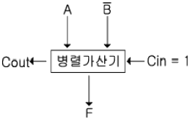
- 가산
- 감산
- A를 전송
- A를 1증가
(정답률: 50%)
85. 주기억장치의 용량이 1024KB인 컴퓨터에서 32비트의 가상주소를 사용하는데, 페이지의 크기가 1K워드이고 1워드가 4바이트라면 실제 페이지 주소와 가상 페이지 주소는 몇 비트씩 구성되는가?
- 실제 페이지 주소 = 7, 가상 페이지 주소 = 12
- 실제 페이지 주소 = 7, 가상 페이지 주소 = 20
- 실제 페이지 주소 = 8, 가상 페이지 주소 = 12
- 실제 페이지 주소 = 8, 가상 페이지 주소 = 20
(정답률: 42%)
86. 2진수 1001에 대한 해밍 코드로 옳은 것은? (단, 짝수 패리티 체크를 사용한다.)
- 0011001
- 1000011
- 0100101
- 0110010
(정답률: 73%)
87. 컴퓨터 메모리에 저장된 바이트들의 순서를 설명하는 용어로 바이트 열에서 가장 큰 값이 먼저 저장되는 것은?
- Large-endian
- Small-endian
- big-endian
- little-endian
(정답률: 59%)
88. 다음 중 센서 네트워크를 위한 운영체제는?
- bluetooth
- IEEE802.3
- tinyOS
- palmOS
(정답률: 60%)
89. 마이크로프로세서의 전송명령 없이 데이터를 입.출력장치에서 메모리로 전송할 수 있는 것은?
- DMA
- Interrupt
- FIFO
- SCAN
(정답률: 72%)
90. 기억장치에 기억되어 있는 정보의 내용 또는 그의 일부에 의해서 기억되어 있는 위치에 접근하여 정보를 읽어내는 장치는?
- 연관기억장치(Associative)
- 가상기억장치(Virtual Memory)
- 캐시기억장치(Cache Memory)
- 보조기억장치(Auxiliary Memory)
(정답률: 78%)
91. 다음 ( ) 안에 들어갈 내용으로 가장 적합한 것은?
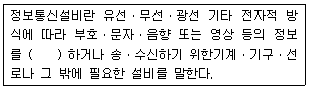
- 저장ㆍ제어ㆍ처리
- 저장ㆍ축적ㆍ제어
- 저장ㆍ압축ㆍ처리
- 축적ㆍ저장ㆍ처리
(정답률: 57%)
92. 지식경제부 장관은 전기통신기술의 진승을 위하여 그에 관한 시행계획을 수립ㆍ시행한다. 이 시행계획에 포함되어야 하는 사항이 아닌 것은?
- 전기통신설비에 관한 사항
- 전기통신기술의 표준화에 관한 사항
- 전기통신기술의 연구ㆍ개발에 관한 사항
- 전기통신기술을 연구하는 단체의 육성에 관한 사항
(정답률: 42%)
93. 다음 중 정보통신공사업의 등록기준에 포함되지 않는 것은?
- 기술능력
- 사무실
- 자본금
- 공사실적
(정답률: 73%)
94. 다음 ( ) 안에 들어갈 내용으로 가장 적합한 것은?
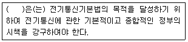
- 국무총리
- 지식경제부장관
- 방송통신위원회
- 정보통신정책심의위원회
(정답률: 62%)
95. 정보통신공사업자가 방송통신위원회의 인가를 받아 설립할 수 있는 정보통신공사협회의 목적이 아닌 것은?
- 품위의 유지
- 기술의 향상
- 공사시공 방법의 개량
- 정보통신기술자의 효율적인 활용
(정답률: 48%)
96. 다음 중 보편적 역무의 구체적 내용을 정할 때 고려하는 사항이 아닌 것은?
- 공공의 이익과 안전
- 재정 및 기술적 능력 정도
- 전기통신역무의 보급 정도
- 정보통신기술의 발전 정도
(정답률: 38%)
97. 방송통신위원회가 자가전기통신설비를 설치한 자에게 1년 이내의 기간을 정하여 그 사용의 정지를 명할 수 있는 경우가 아닌것은?
- 전기통신기본법의 규정에 의한 시정명령을 이행하지 아니한 경우
- 전기통신기본법의 규정에 위반하여 설치한 목적에 반하여 자가전기통신설비를 운용한 경우
- 전기통신기본법의 규정에 위반하여 타인의 통신을 매개한 경우
- 전기통신기본법의 규정에 따라 자가전기통신설비의 변경신고를 한 후 설비를 하지 않은 경우
(정답률: 69%)
98. 다음 중 정보통신공사업법의 목적으로 적합하지 않은 것은?
- 공공복히의 증진에 이바지
- 정보통신공사의 적정한 시공
- 정보통신공사업의 건전한 발전을 도모
- 정보통신공사의 도급 등에 관하여 필요한 사항을 규정
(정답률: 56%)
99. 다음 ( ) 안에 들어갈 내용으로 가장 적합한 것은?
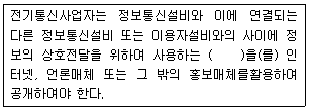
- 이용약관
- 통신규약
- 시설약관
- 기술기준
(정답률: 58%)
100. 전기통신설비가 다른 사람의 전기통신설비와 접속되는 경우에는 분계점이 설정되어야 하는데 그 이유로 가장 적합한 것은?
- 예비용 전원설비 등의 설치 및 공급을 위하여
- 시설 유지시 간단하게 분리, 시험할 수 있게 하기 위하여
- 설비의 전기적, 음향적 결합의 제반 문제점 해소를 위하여
- 건설과 보전에 관한 책임 등의 한계를 명확하게 하기 위하여
(정답률: 92%)